Bemerkung
Hallo und willkommen in der SunFounder Raspberry Pi & Arduino & ESP32 Enthusiasten-Gemeinschaft auf Facebook! Tauchen Sie tiefer ein in die Welt von Raspberry Pi, Arduino und ESP32 mit anderen Enthusiasten.
Warum beitreten?
Expertenunterstützung: Lösen Sie Nachverkaufsprobleme und technische Herausforderungen mit Hilfe unserer Gemeinschaft und unseres Teams.
Lernen & Teilen: Tauschen Sie Tipps und Anleitungen aus, um Ihre Fähigkeiten zu verbessern.
Exklusive Vorschauen: Erhalten Sie frühzeitigen Zugang zu neuen Produktankündigungen und exklusiven Einblicken.
Spezialrabatte: Genießen Sie exklusive Rabatte auf unsere neuesten Produkte.
Festliche Aktionen und Gewinnspiele: Nehmen Sie an Gewinnspielen und Feiertagsaktionen teil.
👉 Sind Sie bereit, mit uns zu erkunden und zu erschaffen? Klicken Sie auf [hier] und treten Sie heute bei!
Einbruchmeldeanlage mit Blynk
Dieses Projekt demonstriert eine einfache häusliche Einbruchmeldeanlage mit einem passiven Infrarot (PIR) Sensor (HC-SR501). Wenn das System über die Blynk-App auf den ‚Abwesenheits‘-Modus gesetzt ist, überwacht der PIR-Sensor Bewegungen. Jede erkannte Bewegung löst eine Benachrichtigung in der Blynk-App aus und warnt den Benutzer vor einem möglichen Einbruch.
1. Schaltung aufbauen
Bemerkung
Das ESP8266-Modul benötigt einen hohen Strom, um eine stabile Betriebsumgebung zu gewährleisten. Stellen Sie daher sicher, dass die 9V-Batterie angeschlossen ist.

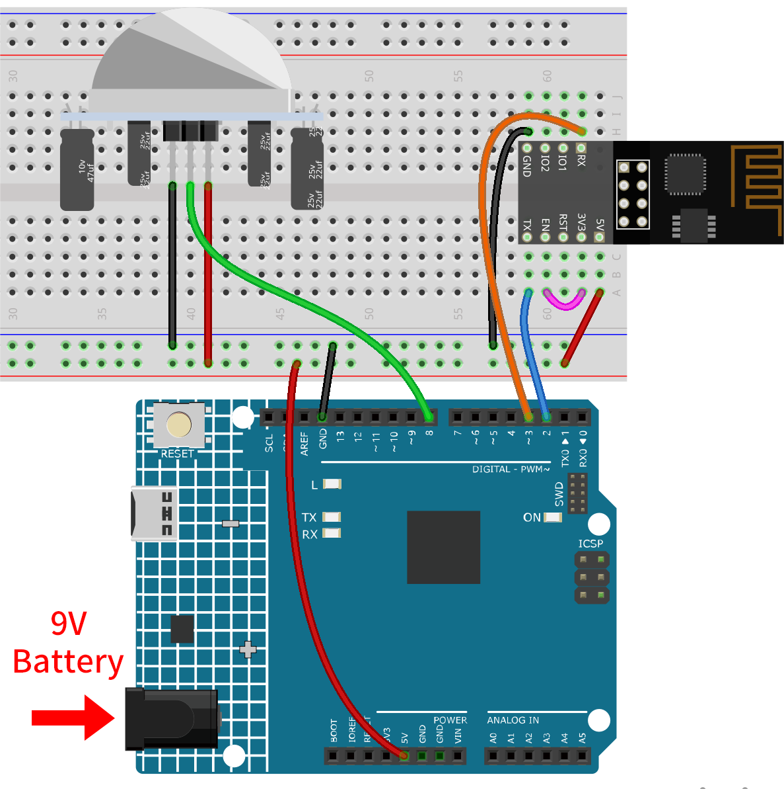
2. Blynk konfigurieren
Bemerkung
Wenn Sie mit Blynk noch nicht vertraut sind, wird dringend empfohlen, diese beiden Tutorials zuerst zu lesen. Einführung in Blynk ist ein Einsteigerleitfaden für Blynk, der auch die Konfiguration von ESP8266 und die Registrierung bei Blynk umfasst. Und Flammenwarnsystem mit Blynk ist ein einfaches Beispiel, aber die Schritterklärung wird detaillierter sein.
2.1 Vorlage erstellen
Zunächst müssen wir eine Vorlage in Blynk erstellen. Folgen Sie den untenstehenden Schritten, um eine „Intrusion Alert System“-Vorlage zu erstellen.

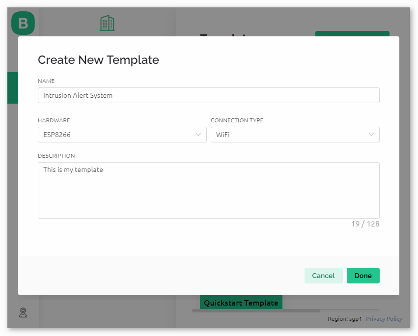
2.2 Datenströme
Erstellen Sie Datastreams vom Typ Virtual Pin auf der Datenstrom-Seite, um Daten von ESP8266 und Uno R4-Board zu empfangen.
Erstellen Sie den virtuellen Pin V0 gemäß dem folgenden Schema:
Setzen Sie den Namen des Virtual Pin V0 auf AwayMode. Legen Sie den DATA TYPE auf Integer und MIN und MAX auf 0 und 1 fest.

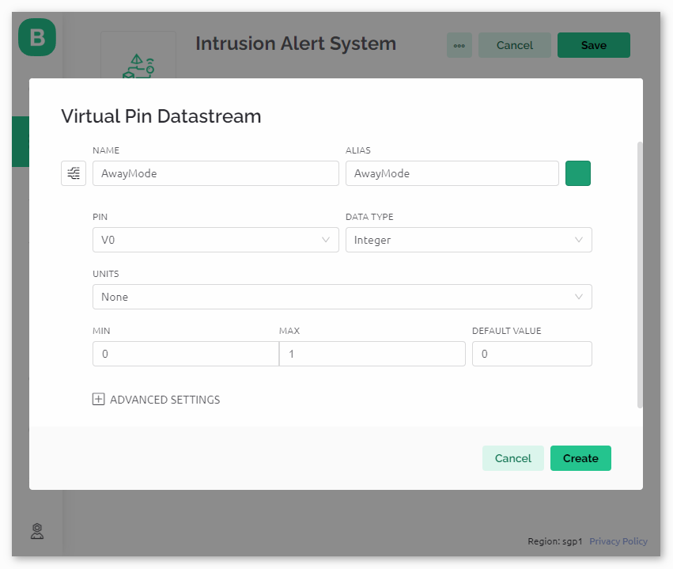
Erstellen Sie den virtuellen Pin V1 gemäß dem folgenden Schema:
Setzen Sie den Namen des Virtual Pin V1 auf Current status. Legen Sie den DATA TYPE auf String fest.

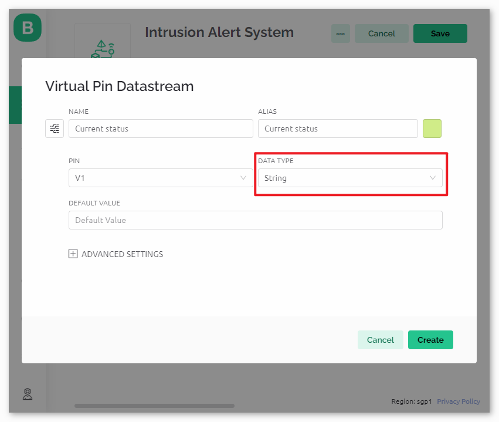
Stellen Sie sicher, dass Sie zwei virtuelle Pins gemäß den oben beschriebenen Schritten eingerichtet haben.

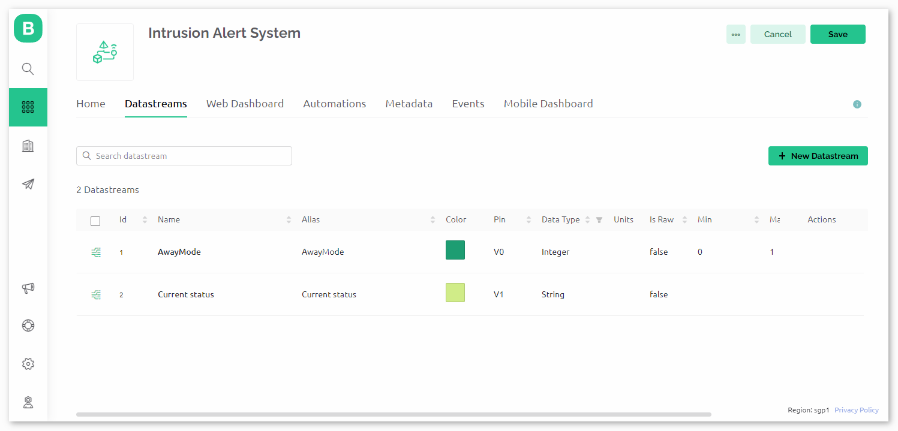
2.3 Ereignis
Als nächstes erstellen wir ein event, das die Erkennung von Einbrüchen protokolliert und eine E-Mail-Benachrichtigung sendet.
Bemerkung
Es wird empfohlen, die Einstellungen mit meinen Einstellungen konsistent zu halten. Andernfalls müssen Sie möglicherweise den Code ändern, um das Projekt auszuführen. Stellen Sie sicher, dass der EVENT CODE als intrusion_detected festgelegt ist.

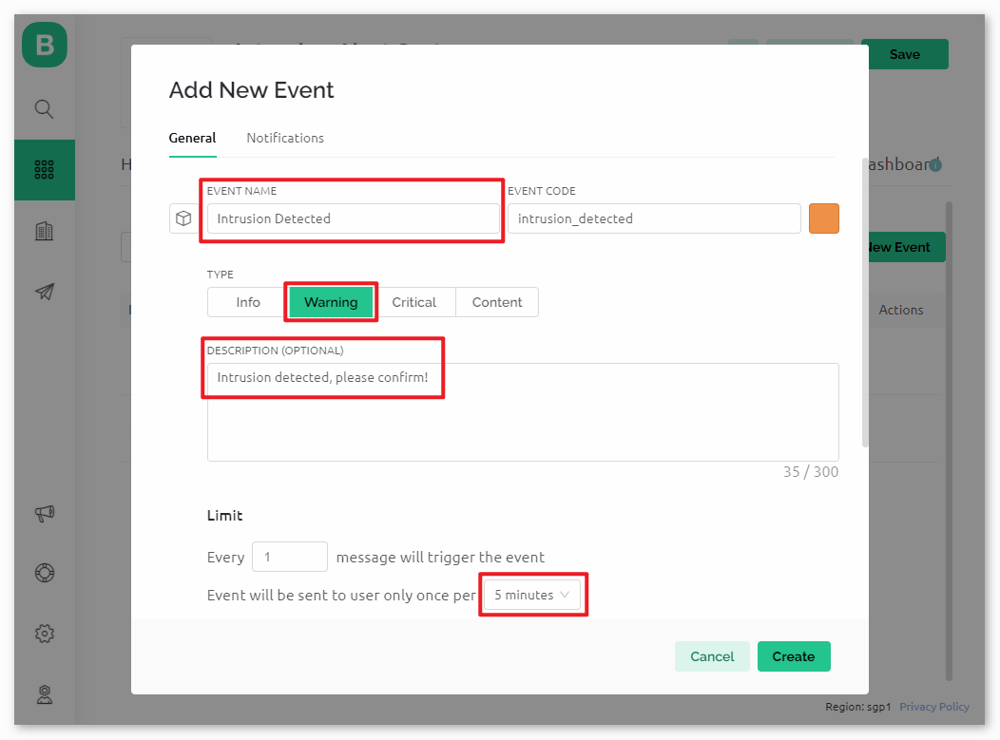
Gehen Sie zur Notifications-Seite und konfigurieren Sie die E-Mail-Einstellungen.

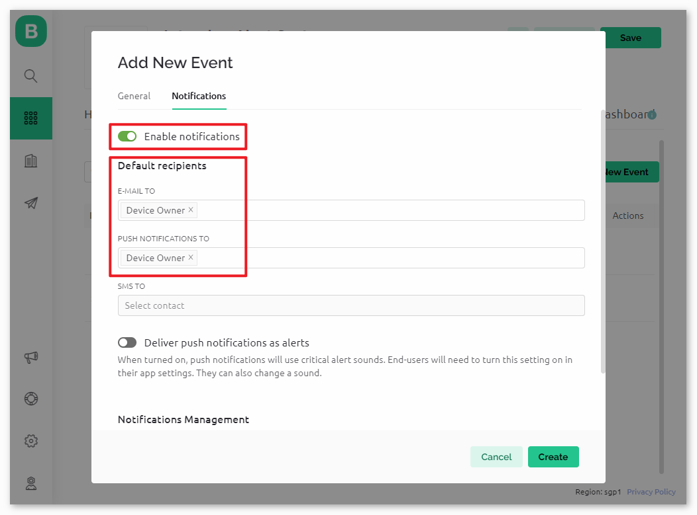
2.4 Web-Dashboard
Wir müssen auch das Web-Dashboard konfigurieren, um mit der Einbruchmeldeanlage interagieren zu können.
Ziehen Sie ein Switch widget und ein Label widget auf die Web-Dashboard-Seite.

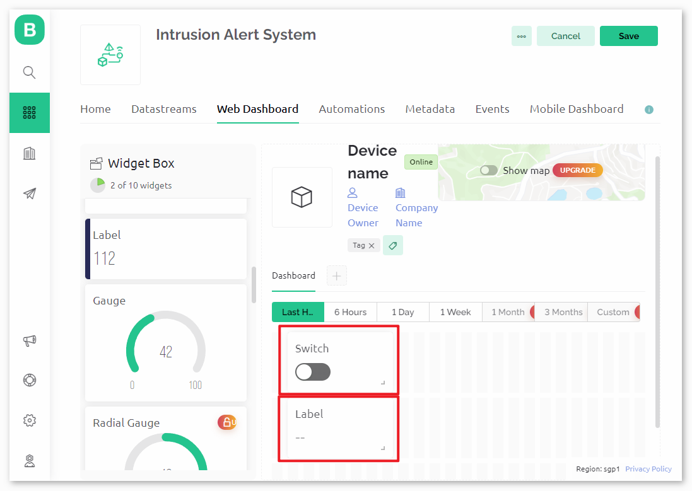
Auf der Einstellungsseite des Switch widget wählen Sie Datenstrom als AwayMode(V0). Setzen Sie ONLABEL und OFFLABEL, um „abwesend zu Hause“ anzuzeigen, wenn der Schalter eingeschaltet ist, und „zu Hause“, wenn der Schalter ausgeschaltet ist.

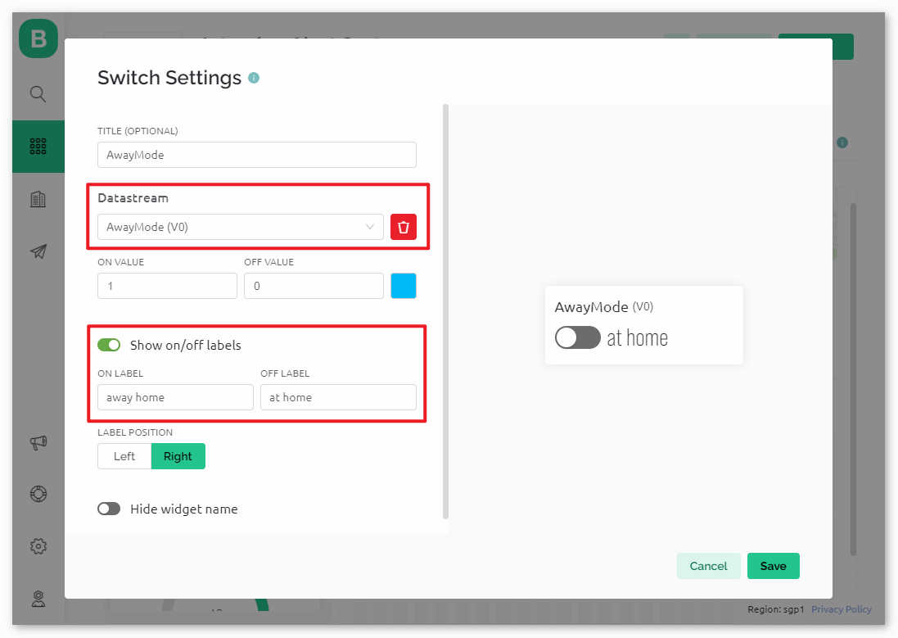
Auf der Einstellungsseite des Label widget wählen Sie Datenstrom als Current status(V1).

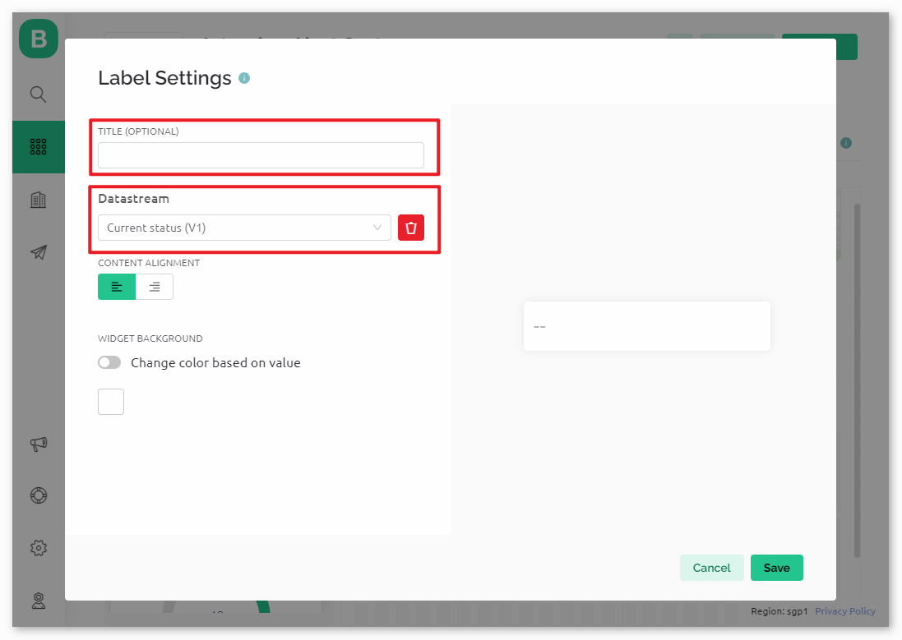
2.5 Vorlage speichern
Zum Schluss vergessen Sie nicht, die Vorlage zu speichern.

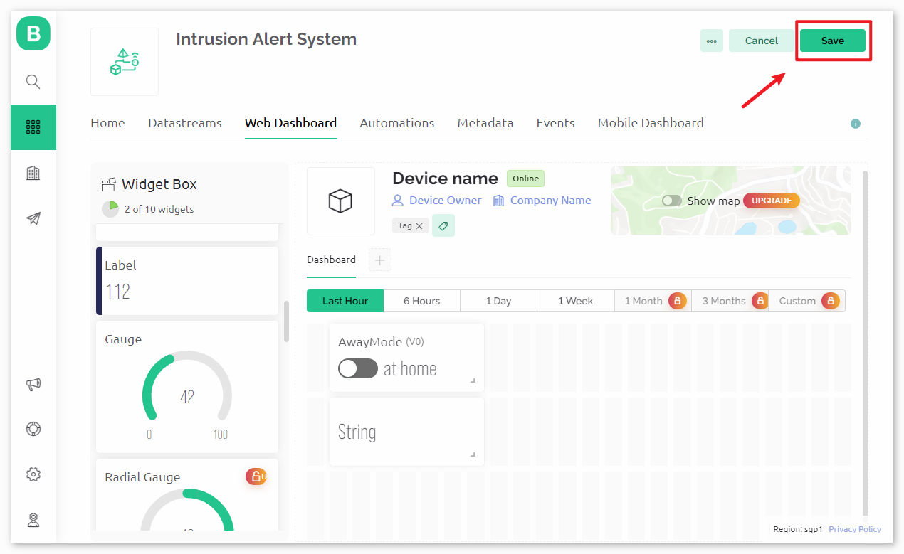
3. Code ausführen
Öffnen Sie die Datei
02-Intrusion_alert_system.inounter dem Pfadultimate-sensor-kit\iot_project\wifi\02-Intrusion_alert_systemoder kopieren Sie diesen Code in die Arduino IDE.Erstellen Sie ein Blynk-Gerät mit der Vorlage „Einbruchmeldesystem“. Anschließend ersetzen Sie die Werte für
BLYNK_TEMPLATE_ID,BLYNK_TEMPLATE_NAMEundBLYNK_AUTH_TOKENdurch Ihre eigenen.#define BLYNK_TEMPLATE_ID "TMPxxxxxxx" #define BLYNK_TEMPLATE_NAME "Intrusion Alert System" #define BLYNK_AUTH_TOKEN "xxxxxxxxxxxxx"
Sie müssen auch die
ssidund dasPasswortdes von Ihnen verwendeten WLANs eingeben.char ssid[] = "your_ssid"; char pass[] = "your_password";
Nach der Auswahl des richtigen Boards und Ports klicken Sie auf die Schaltfläche Hochladen.
Öffnen Sie den seriellen Monitor (Baudrate auf 115200 einstellen) und warten Sie auf eine Meldung, die eine erfolgreiche Verbindung anzeigt.

Bemerkung
Sollte die Meldung
ESP is not respondingerscheinen, wenn Sie eine Verbindung herstellen, befolgen Sie bitte diese Schritte:Stellen Sie sicher, dass die 9V-Batterie angeschlossen ist.
Setzen Sie das ESP8266-Modul zurück, indem Sie den Pin RST für 1 Sekunde mit GND verbinden und dann trennen.
Drücken Sie die Reset-Taste auf dem R4-Board.
Manchmal müssen Sie die oben genannten Schritte 3-5 Mal wiederholen, bitte haben Sie Geduld.
4. Code-Erklärung
Konfiguration & Bibliotheken
Hier werden Konstanten und Anmeldedaten für Blynk festgelegt. Die erforderlichen Bibliotheken für das ESP8266-WiFi-Modul und Blynk werden eingebunden.
#define BLYNK_TEMPLATE_ID "TMPxxxx" #define BLYNK_TEMPLATE_NAME "Intrusion Alert System" #define BLYNK_AUTH_TOKEN "xxxxxx-" #define BLYNK_PRINT Serial #include <ESP8266_Lib.h> #include <BlynkSimpleShieldEsp8266.h>
WiFi-Einrichtung
Konfigurieren der WLAN-Zugangsdaten und Einrichten der seriellen Software-Kommunikation mit dem ESP01-Modul.
char ssid[] = "your_ssid"; char pass[] = "your_password"; SoftwareSerial EspSerial(2, 3); #define ESP8266_BAUD 115200 ESP8266 wifi(&EspSerial);
PIR-Sensor-Konfiguration
Definieren des Pins, an dem der PIR-Sensor angeschlossen ist, und Initialisieren der Zustandsvariablen.
const int sensorPin = 8; int state = 0; int awayHomeMode = 0; BlynkTimer timer;
setup() Funktion
Diese initialisiert den PIR-Sensor als Eingang, richtet die serielle Kommunikation ein, stellt eine Verbindung zum WLAN her und konfiguriert Blynk.
Mit
timer.setInterval(1000L, myTimerEvent)wird das Timerintervall in setup() festgelegt. Hier legen wir fest, dass die FunktionmyTimerEvent()alle 1000 ms ausgeführt wird. Sie können den ersten Parameter vontimer.setInterval(1000L, myTimerEvent)ändern, um das Intervall zwischen denmyTimerEvent-Ausführungen zu ändern.
void setup() { pinMode(sensorPin, INPUT); Serial.begin(115200); EspSerial.begin(ESP8266_BAUD); delay(10); Blynk.config(wifi, BLYNK_AUTH_TOKEN); Blynk.connectWiFi(ssid, pass); timer.setInterval(1000L, myTimerEvent); }
loop() Funktion
Die Schleifenfunktion führt wiederholt Blynk und die Blynk-Timer-Funktionen aus.
void loop() { Blynk.run(); timer.run(); }
Blynk-App-Interaktion
Diese Funktionen werden aufgerufen, wenn das Gerät eine Verbindung zu Blynk herstellt und wenn sich der Zustand des virtuellen Pins V0 in der Blynk-App ändert.
Jedes Mal, wenn das Gerät eine Verbindung zum Blynk-Server herstellt oder aufgrund schlechter Netzwerkbedingungen erneut eine Verbindung herstellt, wird die Funktion
BLYNK_CONNECTED()aufgerufen. Der BefehlBlynk.syncVirtual()fordert einen einzelnen virtuellen Pin-Wert an. Der angegebene virtuelle Pin wirdBLYNK_WRITE()aufrufen. Weitere Details finden Sie unter Blynk - State Syncing .Wann immer sich der Wert eines virtuellen Pins auf dem BLYNK-Server ändert, wird
BLYNK_WRITE()ausgelöst. Weitere Details unter Blynk - BLYNK_WRITE() .
// This function is called every time the device is connected to the Blynk.Cloud BLYNK_CONNECTED() { Blynk.syncVirtual(V0); } // This function is called every time the Virtual Pin 0 state changes BLYNK_WRITE(V0) { awayHomeMode = param.asInt(); // additional logic }
Datenverarbeitung
Jede Sekunde ruft die Funktion
myTimerEvent()die FunktionsendData()auf. Wenn der Abwesenheitsmodus in Blynk aktiviert ist, überprüft sie den PIR-Sensor und sendet bei erkannter Bewegung eine Benachrichtigung an Blynk.Wir verwenden
Blynk.virtualWrite(V1, "Jemand ist in Ihrem Haus! Bitte überprüfen!"), um den Text eines Labels zu ändern.Mit
Blynk.logEvent("intrusion_detected");wird ein Ereignis in Blynk protokolliert.
void myTimerEvent() { sendData(); } void sendData() { if (awayHomeMode == 1) { state = digitalRead(sensorPin); // Read the state of the PIR sensor Serial.print("state:"); Serial.println(state); // If the sensor detects movement, send an alert to the Blynk app if (state == HIGH) { Serial.println("Somebody here!"); Blynk.virtualWrite(V1, "Somebody in your house! Please check!"); Blynk.logEvent("intrusion_detected"); } } }
Referenzen